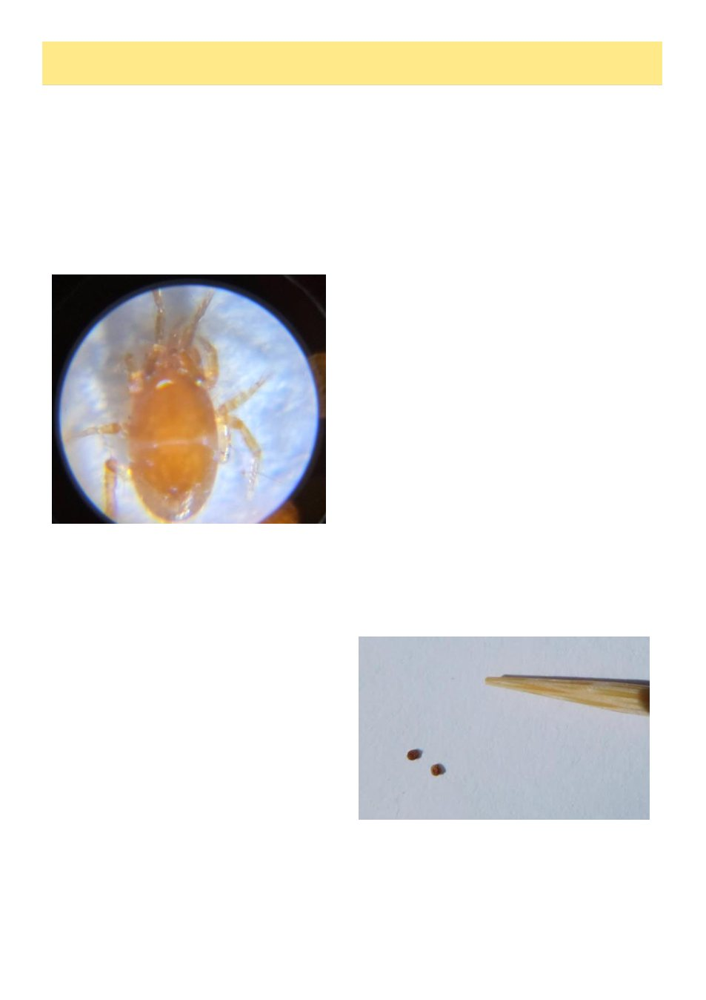

10
Australian Bee Journal
Mystery Mites
By Kris Fricke
(& substantial quotes from Bruce Ward)
Werribee Mystery Mite
On the evening of Monday April 6th Werribee area
beekeeper David Ross posted on the Werribee Beekeep-
ers‟ facebook page:
Tonight I had a bee come inside that was clearly
struggling, I put it out of its misery with a cloth and
a large number of mites came off it. Any ideas on
what it is? Will be doing another hive check tomor-
row on all 3 hives and see if I get any more. Size is
less than 1mm.
He immediately reported it to AgVic as well. On
Facebook people didn‟t hesitate to start guessing:
chatGPT says it‟s a varroa, which it clearly is not;
someone else said it was a pollen mite while posting a
picture that was equally not a pollen mite either. To me
it looked very alarmingly like a Tropilaelaps mite, but
there are actually a lot of mites that look very similar so
all we could do was wait anxiously for the official diag-
nosis.
AgVic staff rushed out there the next morning, took
samples and checked the rest of the hives. They deliv-
ered the sample to the AgriBio diagnostics lab on the La
Trobe University campus, staff there worked overtime
into the evening to identify the mystery mite. Unfortu-
nately, apparently the samples were both slightly dam-
aged and not fully adult, which made things harder, but
finally they were able to identify them as mites of the
genus Parasitus. These mites are not harmful to bees,
can be found in compost and leaf litter, can be phoretic
(hitching a ride) on dung beetles or other similar insects,
and eat nematodes and other small arthropods including
other mite species (I don‟t believe anyone has tested if
they‟ll eat Varroa…). They were unable to identify it to
the species level, but I note the most common species of
Parasitus have all been found in bee hives (though it is
not believed to prey on bees or bee larvae).1 Interest-
ingly I note on a map2 on the Atlas of Living Australia3
while there are a few sporadic identifications of Parasi-
tus mites elsewhere in Australia, findings are more
common in Central Victoria and in Werribee very spe-
cifically there are four specimens collected and pre-
served by NSW DPI, so it seems to be a hotspot for this
mite.
Pollen Mite
On the evening of September 4th, 2024, I, then an
AgVic employee, was just sitting to dinner when a call
came in about a suspicious mite reported near Geelong
about forty minutes from me just then by former NSW
apiary officer Bruce Ward. Obviously by default I
can‟t share the details of what I did for AgVic, but con-
veniently Bruce himself wrote about it for the Geelong
club newsletter, and because he‟s a good writer himself,
I‟ll quote him directly, writing in September 2024:
With the arrival of Varroa in Victoria last month,
I decided to increase my Varroa testing, and have
started a detergent wash every month. You can im-
agine my surprise when on my very first monthly
wash, I spotted several brown spots in my wash bot-
tle. My first reaction was that they were too small to
be Varroa, but I wanted to take a closer look.
I strained the spots onto a paper towel and had a
look with a hand lens. I was expecting to see lumps
of pollen or debris.
My heart sank when I saw two brown mites that
looked very similar to Varroa. One was on its front
and had a domed back. The other one was on its
back, and I could just make out little legs.
My first step was to make an online report
through the exotic plant disease hotline. Within an
hour I was contacted by the bee biosecurity team
from Agriculture Victoria. The biosecurity staff ar-
ranged to have the mites collected by a Varroa De-
velopment Officer (VDO). We took the opportunity
to re-check the hive and uncap the few drone brood
cells available, with no further concerning signs. By
this time I had also been able to take a relatively
clear photo of the two mites.
At that time, even though pollen mites are much
smaller than Varroa, I (Kris) personally had happily not
seen Varroa first hand in nearly 10 years so I felt I
couldn‟t rule out the possibility. The next day I met
one of the biosecurity officers at the Geelong ringroad
(Continued on page 11)
Credit: David Ross, Werribee
With the head of a toothpick for size comparison.
Credit: Bruce Ward, Geelong